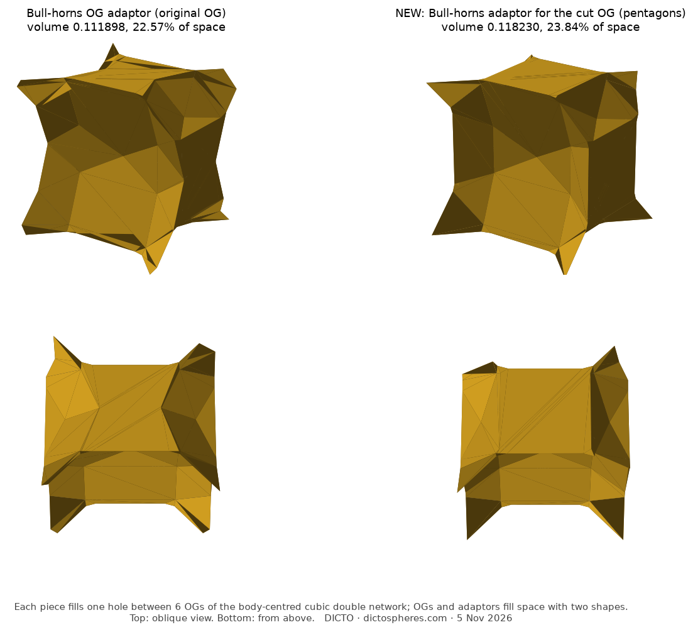

In the octet. The cut solid still sits in every octahedron of the octet truss with its eight joint hexagons on the faces (companion paper, Bull-horns). Across every octahedron edge two copies now face each other with parallel pentagons, turned 36° relative to each other, 0.206 apart and offset sideways by 0.350; a slanted pentagonal antiprism spans them. The twin law of the gyrated octet depends only on the hexagons and the symmetry, so it carries over. DICTO proposed adapting the octet kit; with the connector it closes with four shapes and one mirror pair (float, manifold booleans): the cut solid in each octahedron (volume 1.132872); one connector per octahedron edge (0.018887, six per octahedron, two thirds of it inside the octahedra); six corner pieces per octahedron (0.07826 each, all one shape by the three-fold turns, with no left and right); and in each tetrahedron one dented tetrahedron (0.397254), left in one class of tetrahedra and right in the other. Their volumes add up to an octahedron and two tetrahedra (2.510264); no two pieces overlap. The kit for the gyrated octet and every stacking between is in progress.
The Bull-horns adaptor, adapted. DICTO's Bull-horns OG adaptor fills the gap of the body-centred cubic double network with one piece per hole between six copies (the companion paper Golden Bodhi Pyrochlore). DICTO proposed the same for the cut solid. The same construction (the Voronoi cell of each hole among all holes, minus the six copies that bite it) gives a new adaptor of volume 0.118230, exactly one third of a copy's gap, again one solid without holes, centrally symmetric with a mirror plane (no left and right forms), sphericity 0.514 (0.502 before). The cut solid and its adaptor fill space with two shapes, 76.16% and 23.84%. The adaptor is the old one plus the room the 12 tips left; where the tips bit small notches into it, it now meets the pentagons with flat faces (Figure 11). The same program, run on the Ogdoecontahedron itself, returns the published adaptor volume 0.111898.
